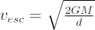
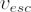

One of the earliest theories of black holes was proposed in 1783 by the amateur astronomer Reverend John Michell, with an idea based on Sir Isaac Newton’s laws of gravity. For any massive object, we can calculate the escape velocity:

where M is the mass of the body from which we are attempting to escape, G is the gravitational constant and d is the distance between the escaping object and the mass producing the gravitational field. This means that to escape the object, we need to travel faster than

.Michell realised that for a sufficiently massive and compact object, the escape velocity would be greater than the (finite) speed of light. If this massive, compact object was a star emitting light, the light would not be able to escape, as it would always be pulled back towards the star. To Michell, this object was a dark star. These days, it describes the action of a black hole.
Pierre Simon Laplace, the person often credited as to first to come up with the idea of a dark star, arrived independently at the same conclusions a few years later.